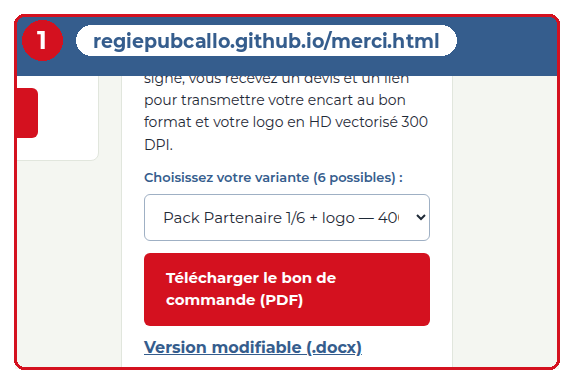
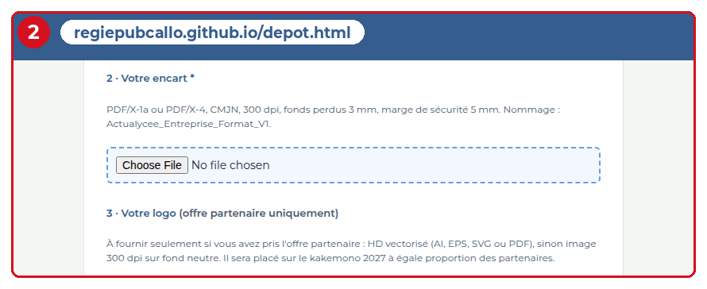
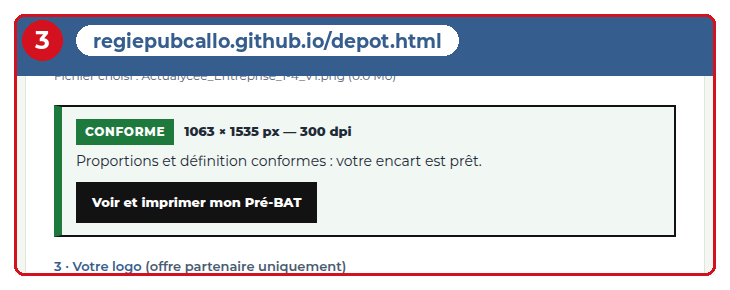
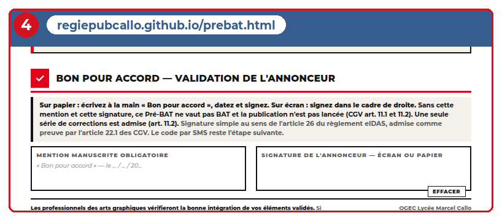

Le parcours en un coup d’œil
Cinq moments, deux acteurs, quatre dates. Tout le reste du guide détaille cette ligne.
Trois documents, trois rôles
Les confondre est la source de presque tous les litiges. Chacun prouve une chose différente, et aucun ne remplace les autres.
Le bon de commande
Il dit quoi, combien et quand : format, prix, support, échéances. C'est lui qui rend la commande ferme.
Le Pré-BAT, puis le BAT
Le Pré-BAT contrôle le fichier. Le BAT montre le visuel en page. C'est le BAT signé qui autorise l'impression.
La facture
Elle constate que la prestation est due et exigible. Elle part à réception du BAT signé, pas à la parution.
Deux verrous, sans exception : pas de fabrication sans BAT signé, pas de facture sans bon de commande signé. Chaque verrou saute si le document manque — c'est ce qui protège l'établissement.
Qui fait quoi
Le partenaire n'a que trois gestes à faire. Tout le reste est de notre côté — et c'est ce qui fait la différence sur ce type de support.
Le partenaire
- Signer le bon de commande
- Envoyer un encart lisible à la bonne définition
- Signer le BAT
Aucune compétence technique attendue : le site mesure le fichier et dit précisément ce qui manque.
La régie
- Contrôler le fichier et rendre un verdict chiffré
- Mettre en page et produire le BAT
- Imprimer, publier, facturer, archiver
Le dossier par entreprise est créé automatiquement au premier dépôt, avec sa date et son lien.
Les cinq moments du parcours
Chaque moment a un responsable, une date et une preuve conservée. Rien d'autre à retenir.
La commande
Le partenaire reçoit le devis, choisit son format, télécharge le bon de commande, le signe et le renvoie avec les CGV acceptées.
Les éléments
Encart et, si l'offre partenaire a été souscrite, le logo. On conserve toujours le fichier d'origine tel qu'il a été déposé, jamais une version retouchée.
Le contrôle
Dès le dépôt, le fichier est mesuré : proportions et définition à la taille finale. Le verdict tombe en quelques millisecondes, et le Pré-BAT porte le motif chiffré.
La validation
Le BAT est envoyé, daté, avec son échéance de retour. Le partenaire écrit « Bon pour accord », date et signe. Une seule série de corrections est admise.
La facture, puis la parution
La facture part à réception du BAT signé. Le paiement est à 30 jours. Après parution, on conserve la page du magazine : c'est la preuve d'exécution.
À l’écran, où ça se passe
Les quatre moments où le partenaire agit ou reçoit une réponse, tels qu’il les verra.

1 · La commandePage de remerciement, bloc « Votre bon de commande » : choisir la variante, puis télécharger.

2 · Les élémentsPage de dépôt, champ 2 : le format commandé, puis le fichier de l'encart.

3 · Le contrôleLe verdict s'affiche sous le fichier, avec la mesure exacte et le motif s'il y a lieu.

4 · La validationBas du Pré-BAT, bloc « Bon pour accord » : écrire, dater, signer.
Quand ça dérape
Cinq situations, cinq réflexes. Elles couvrent la quasi-totalité des dossiers qui prennent du retard.
| Situation | Le réflexe |
|---|---|
| Le fichier est refusé | Rien en page, rien facturé. On renvoie le motif chiffré le jour même : « il vous faut 1 063 × 1 535 px, votre fichier fait 220 × 220 ». |
| Le bon de commande manque | Accusé de réception des fichiers, pas de mise en page, relance sur le seul point manquant. Des fichiers sans bon de commande ne sont pas une commande. |
| Le BAT ne revient pas | Relance à trois jours. La validation tacite ne s'applique que si le bon de commande la prévoit — sinon on relance par écrit et on documente. |
| Le partenaire annule | Par écrit uniquement. 25 % du prix avant la date limite des éléments, 100 % après. Les frais techniques engagés restent dus. |
| La facture n'est pas payée | À l'échéance, sans rappel : pénalités au taux BCE majoré de 10 points et 40 € forfaitaires. La diffusion peut être suspendue. |
Où en est le dossier
Chaque dossier porte un numéro. Il dit à lui seul ce qui manque, sans relire les échanges.
Prospect
- 1E-mail envoyé, ouvert
- 2A cliqué
- 3A visité le site
- 4A répondu au formulaire
Commande
- 5Bon de commande téléchargé
- 6Bon de commande reçu
Production
- 7Documents reçus
- 8BAT envoyé
- 9BAT signé
Bouclé
- 10Facturé, dossier clos
Deux check-lists
À passer avant d'engager l'argent de l'établissement, et avant d'attendre un virement qui ne viendra pas.
Avant de lancer la fabrication
- Bon de commande signé, complet, au bon prix
- Encart reçu et conforme au contrôle
- Logo conforme, si offre partenaire
- Pagination arrêtée avec l'atelier
- BAT envoyé, daté
- BAT signé reçu et classé
- Montant net saisi dans le classeur
Avant d'envoyer la facture
- Bon de commande signé au dossier
- BAT signé au dossier
- Montant net = prix du bon de commande, remises déduites
- Mention d'exonération de TVA présente
- Échéance à 30 jours
- Numéro de facture unique
Les validations par courriel et les signatures électroniques sont admises comme preuve — à condition qu'elles existent et soient archivées. Le détail juridique figure aux articles 4, 8, 9, 10, 11, 16 et 22 des CGV V2.3.